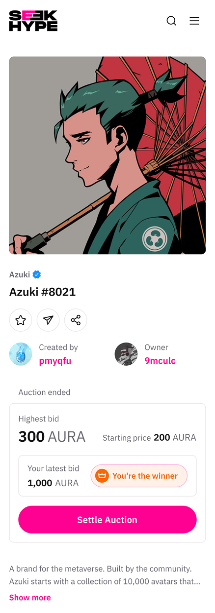
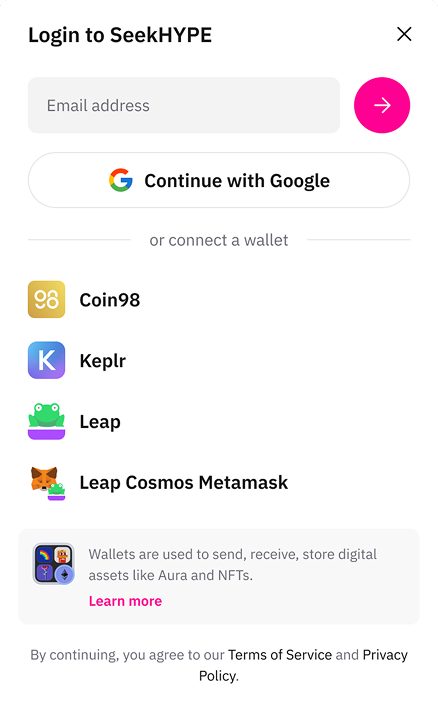

Overview
Aura ran as a permissioned CosmWasm chain built for NFTs. Every new dApp needed bespoke onboarding, and the pool of developers who could build on it was a fraction of the EVM world's.
Stop building the NFT-first consumer surface and reposition the chain as permissionless and EVM-compatible, accepting a known address-model compromise to ship inside one release cycle.
Aura shipped EVM compatibility in May 2024 and became a general-purpose L1. Ecosystem totals now stand at 20+ dApps and 14.5M+ deployed contracts public · cumulative, measured after my exit.
Where the two roles met
I held both hats on this team, which is only interesting where they conflicted. Three places they did:
Scope cuts happened in design review
Because I owned the spec and the screens, features died at the wireframe stage rather than after a sprint of engineering. The NFT launchpad was cancelled from a flow that made its cost obvious, not from a roadmap spreadsheet.
I had to live with my own trade-offs
The PM in me accepted a defect in the address model to ship on time. The designer in me then had to make that defect survivable for a real user. No one to hand it to — which is the honest argument for the hybrid role.
Where they fought, the product won
Six surfaces and ten people meant the designer's instinct to perfect each one was wrong. I chose a shared system over bespoke craft, and accepted that every surface would be slightly less special.
Discovery

User insight
Our users were developers, not consumers. Onboarding a team meant teaching CosmWasm and Rust to people who already had audited Solidity in hand. The objection was never "we don't want to build on Aura" — it was "we'd have to rewrite."
Data insight
The NFT-native cohort the chain was designed for contracted sharply through 2023. Meanwhile our own infrastructure carried steady usage from ordinary contract and wallet activity. The tooling had found a different audience than the positioning had.
Business insight
Aura's stated market was emerging countries, Southeast Asia first. Enterprise and government pipelines there ask for asset verification, compliance and audit trails, not collectibles. Every serious inbound conversation drifted toward tokenizing something real.
The permission gate compounded the developer problem: builders had to ask before they could ship. And continuing to sell an NFT chain meant selling against our own pipeline.
The four questions, answered in writing
- Who and what problem? Web3 developers and enterprise integrators who couldn't deploy on Aura without rewriting in an unfamiliar stack, behind a permission gate.
- Why now? Cosmos-native EVM tooling had matured enough to integrate rather than build, and the NFT thesis was visibly decaying. Waiting a year meant paying to maintain a positioning we no longer believed.
- What outcome would tell us it worked? Any Ethereum-toolchain team able to deploy without a rewrite or an approval step, with the leading indicator being external dApps deploying without our hand-holding.
- Is it feasible? Yes, with one caveat: Ethereum and Cosmos generate addresses differently, so full unification was not achievable in the release window.
The decision: cancelling the NFT app-chain
Aura spent 2021–2023 as a permissioned CosmWasm chain focused on NFTs, in its own words. On 23 May 2024 it shipped Aura EVM and became a permissionless, general-purpose, EVM-compatible L1. The company calls that "a pivotal shift in Aura's trajectory" and its "second phase." The integration is the visible half. The cancellation is the half that mattered.
Options on the table
A — Stay a permissioned NFT app-chain and go deeper on
vertical NFT tooling. Cheapest; bets the company on a contracting
segment.
B — Full migration to EVM. Cleanest developer story; breaks
every existing CosmWasm dApp and every deployed address.
C — Dual-environment. EVM alongside CosmWasm, separated into
address zones, conversion between them, unification deferred.
Criteria I judged on
Developer reach, cost to existing builders, time to ship, and reversibility.
What I chose
Option C, the only one that widened the developer funnel without breaking the dApps already live. The price was a real defect: a user cannot use one address across both environments, only convert between them.
What I killed
The NFT-first consumer roadmap. Twilight Hub, the metaverse and NFT destination in our original architecture, and the NFT launchpad both came off the plan.
I chose to ship that address defect visibly, documented in the release notes and put to a governance vote, rather than hold the upgrade for a quarter to abstract it away. Reach compounds; the address seam was a fix we could make later against a larger ecosystem.
Twilight Hub and the launchpad were the most fundable-sounding items we had, and the reason several people had joined the company. Cutting them was the decision. The EVM integration was the consequence.
One system, six surfaces
Aura shipped an explorer, a multisig wallet, an indexer, a marketplace, a swap and a bot — six product surfaces, ten people, one designer-shaped hole in the middle. Designing each one properly was arithmetically impossible. So the first design decision was not a screen; it was to stop designing screens.
What we built once
A shared type scale, colour and spacing set, and the components every surface repeats: address display and truncation, transaction rows, network and status badges, empty and pending states, wallet-connect. Blockchain products are mostly these five things wearing different hats.
What each surface kept
Only what genuinely differed: the explorer's data density, the multisig's signature ceremony, the marketplace's media-forward browsing. Everything else inherited, whether or not that was the prettiest answer for that product.
Why it was a PM decision too
A system is capacity, not taste. Six bespoke designs would have consumed the design capacity that the EVM transition later needed — the transition that touched every one of these surfaces at once. Building the system in 2023 is what made 2024's re-plumbing affordable.


Validation. Expert usability inspection against the live surfaces, plus dogfooding by our own integrators. For enhancements to shipped products that is the proportionate method; moderated testing was reserved for genuinely new flows, of which the address conversion below was the only one.
The address seam: where the trade-off landed
Every decision above arrives, eventually, at one screen. This is that screen's problem.
1 · The constraint
Ethereum and Cosmos derive addresses differently and count decimals differently — eighteen against six. One account cannot be both. Unifying them was not a design preference we could argue for; it was outside the release window.
2 · The trade-off I accepted
Ship the two environments as separate address zones with conversion between them, rather than hold the upgrade a quarter. Reach compounds. But I had just agreed that every user would now have two addresses and no way to use one.
3 · The interface problem
Make "these two addresses are both you" legible to someone who will never care why. No jargon, no lecture on derivation paths, and no moment where a user believes they have lost funds because their balance is on the other side of a seam they didn't know existed.
4 · How it was designed
One identity, two representations — never two accounts. Conversion presented as moving your own money between your own pockets, with the destination address always shown before confirmation and the previous address never hidden. The word "zone" appears nowhere in the interface.
What I got wrong. I shipped this flow without instrumentation. I knew I was accepting a defect and I had no way to measure what it cost — how many users converted, how many stalled, how many opened support. Designing the mitigation and skipping the measurement is a product-manager failure, not a design one, and I owned both jobs.
Delivery
Two things moved between spec and ship. Address unification was cut to a post-release roadmap item once we confirmed the decimal mismatch couldn't be reconciled in the window, and we adopted an existing conversion module rather than building our own.
The programme also ran in the shadow of the mainnet experience. Xstaxy was announced for 1 October 2022, slipped to November, and shipped on 20 March 2023 after fifteen months of development. I was present for the whole of that five-month slip, and it is exactly why I scoped the EVM upgrade to one release with a stated, accepted defect instead of a complete migration.
What I owned, surface by surface
| Surface | What I owned | The design call | Status today |
|---|---|---|---|
| Aurascan — explorer | Product + design | One transaction history across two execution environments | Live |
| Aura Safe — multisig | Product + design | Kept the signature ceremony intact through the upgrade | Live |
| Aura Index — indexer | Product | Developer-facing; inherited the system wholesale | Live |
| Address conversion | Product + design | One identity, two representations — never two accounts | Shipped May 2024 |
| SeekHype — marketplace | Design | The one surface allowed to break the system for media | Retired |
| Aura Swap | Design | Inherited the transaction and address components unchanged | Retired |
Two of the six are no longer in Aura's published ecosystem. That is what happens to the consumer-facing half of a chain that decides to stop being a consumer product — including the marketplace I had spent the most design time on.
Learning and follow-up
Shipped, not measured by me. Aura EVM went live 23 May 2024; I left on 5 June 2024, before any meaningful adoption cycle. What I would have tracked: external contract deployments per month split by environment, and the share of new dApps arriving without direct BD involvement, which is the real test of whether permissionless changed anything.
1.5B+ transactions
Cumulative network total, published by Aura today public. Not my result.
14.5M+ contracts deployed
Cumulative network total public. The most product-legible of the four, and the one v1 of this page never used.
141,000+ active addresses
Unique, cumulative public. Across 20+ dApps in the ecosystem.
The strategic bet resolved after I left, and it resolved in favour of the direction. Aura took strategic investment from FPT Corporation in February 2025, formally repositioned as "the RWA chain for enterprise, entertainment and government" that same month, and signed a blockchain agreement with the Government of Sierra Leone days later. All three are eight or more months after my exit. I owned the decision to stop being an NFT chain. I did not own what it became next.
What I'd do differently
For most of 2023 I read the NFT-market contraction as a market problem, and only acted on it as a positioning problem in 2024. The signal was in our own product data much earlier: our infrastructure tools were being used for ordinary contract activity while we kept describing ourselves as an NFT chain. That "who is actually using us, and for what" analysis belonged at the start of 2023, not the end.
And I would instrument the address-conversion flow on day one. Holding both roles let me design a mitigation for my own trade-off inside a single release — but it also meant no one was standing outside the decision asking how we would know whether the mitigation worked. That is the failure mode of the hybrid role, and I walked straight into it.